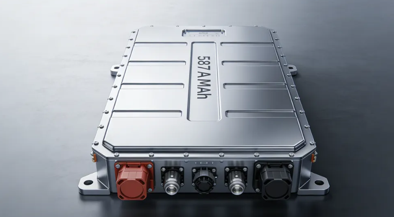
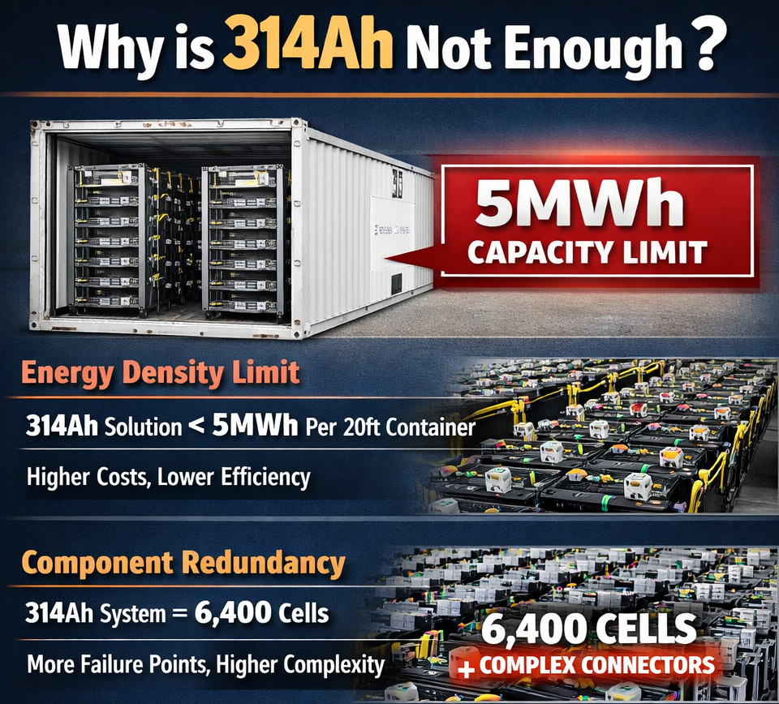
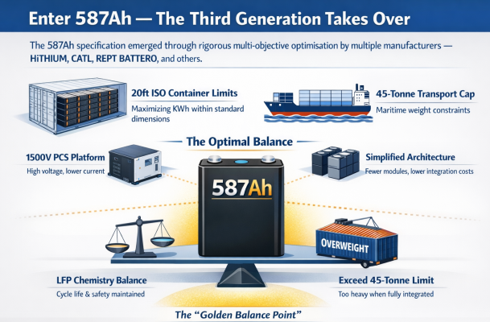
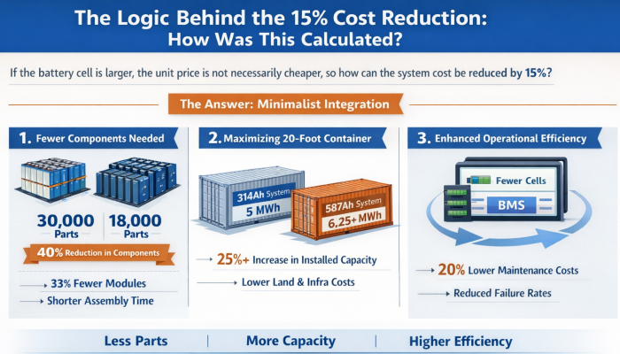
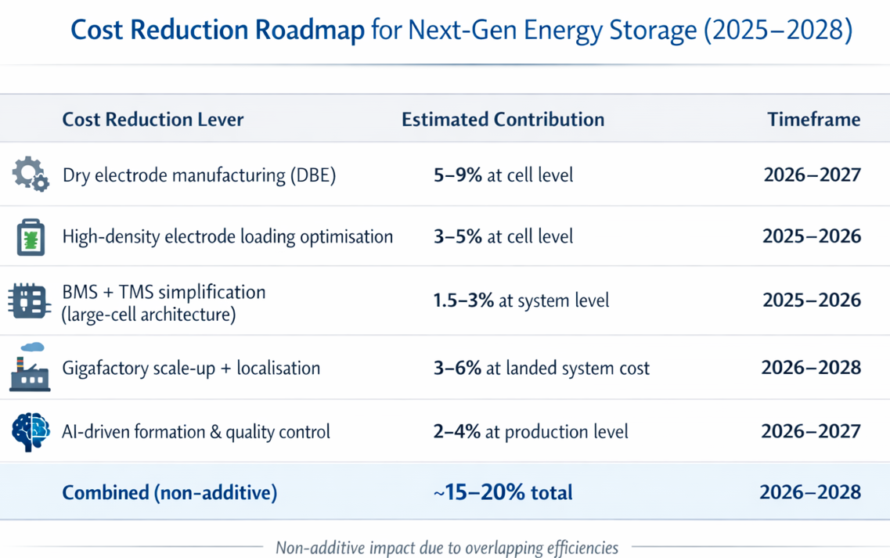
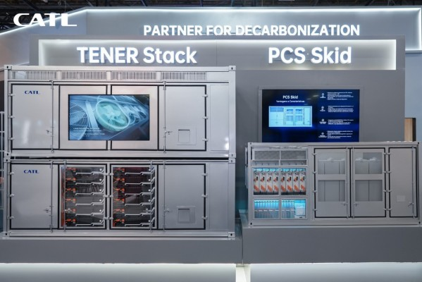
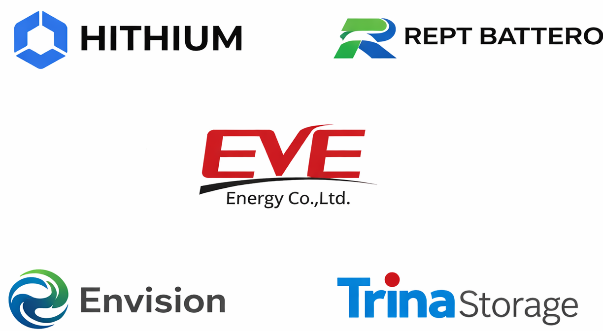
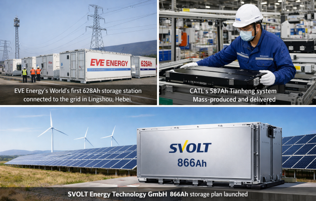
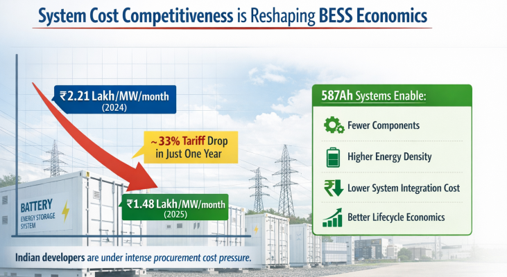
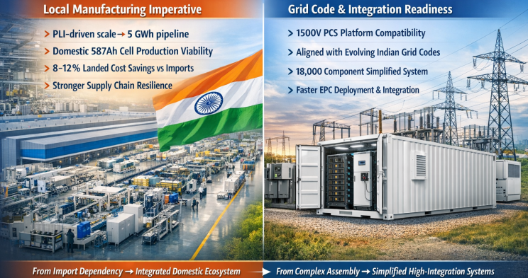

The pace of iteration in the energy storage industry is so fast that it's making industry professionals dizzy. If you're still talking about 314Ah integration solutions, you might not even get a ticket to the bidding process in 2026. With giants like CATL, EVE Energy, and SVOLT successively completing the practical deployment of 500Ah+ large-capacity cells, energy storage systems are facing a "dimensional reduction attack".

I. The "ceiling" of 314Ah and the "stepping stone" of 587Ah
Just a year ago, 314Ah was still recognized as the "golden capacity" in the industry. However, entering 2026, with the full rollout of electricity spot market trading, investors have become extremely demanding in their requirements for LCOS (Levelized Cost of Storage).
Sungrow played a pivotal role in cementing the 314Ah as the generation-defining specification. In 2023, the company partnered with upstream battery manufacturers to formally define the 314Ah cell as the industry mainstream, accelerating global adoption. Penetration of the 314Ah format was forecast to exceed 70% in 2025, making it the most widely deployed cell in the containerised BESS segment.
Why is 314Ah not enough?
Energy density reaches its limit: Within a standard 20-foot container, the 314Ah solution is unlikely to exceed the 5MWh capacity limit, resulting in the inability of the single unit's energy density to further amortize land acquisition, civil engineering, and operation and maintenance costs.
Redundancy of components: For the same 6.25MWh system, if 314Ah cells are used, nearly 6,400 cells and complex connectors are required; this not only increases the number of failure points but also locks up the space for cost reduction.

In early 2026, the 587Ah (and 628Ah) energy storage system officially took over. This is not simply about stacking up capacity, but rather a sign that energy storage systems are moving from "assembling computers" to "high integration".
Enter 587Ah — The Third Generation Takes Over
The 587Ah specification is not an arbitrary number. It emerged from a rigorous multi-objective optimisation process carried out independently by multiple manufacturers — HiTHIUM Energy Storage , CATL , REPT BATTERO , and others — all converging on the same figure. The optimisation had to satisfy simultaneously:
- 20-foot ISO container spatial constraints — maximising kWh within standard container dimensions
- 45-tonne maritime transport weight limits — critical for international project logistics
- 1,500V PCS voltage platform — enabling higher voltage, lower current architectures that reduce copper losses
- System architecture simplification — reducing module and component count to cut integration costs
- LFP chemistry performance balance — not sacrificing cycle life or safety for raw capacity

HiTHIUM Energy Storage multi-objective algorithm, applied to these five constraints, identified 587Ah as the "golden balance point". Formats beyond 628–684Ah risk exceeding the 45-tonne weight threshold when fully integrated with liquid cooling and fire suppression systems or require non-standard transport arrangements.
II. The Logic Behind the 15% Cost Reduction: How Was This Calculated?
Many business owners ask: "If the battery cell is larger, the unit price is not necessarily cheaper, so how can the system cost be reduced by 15%?" It has been analyzed in the latest research data, and the answer lies within "minimalist integration":
1. Significant reduction in the number of parts ordered.
Taking CATL's 587Ah battery cell-integrated Tianheng system as an example, compared to the previous generation 314Ah solution:
Battery module reduction by 33%; A 587Ah-based 6.25 MWh system operates with 18,000 components vs. 30,000 in an equivalent 314Ah system — a 40% reduction in component count.
This means fewer wiring harnesses, fewer structural components, and shorter assembly time.

2. Maximizing the use of a 20-foot container
In 2026, what will be the most expensive aspect of building an energy storage station? It will be land and infrastructure. The 587Ah battery cell allows the single-cell capacity to steadily reach 6.25MWh, and even approach 6.9MWh. Within the same site, the installed capacity has increased by more than 25%, instantly diluting the cost per Wh for civil engineering, supporting facilities, and fire protection.
3. A leap in operational efficiency
Reducing the number of battery cells means fewer sampling points for the BMS (Battery Management System), resulting in less data computation. Failure rate is positively correlated with the number of connectors; reducing the number of parts by 40% means a nearly 20% reduction in later maintenance costs.
CAPEXreduction=Total_InvestmentΔComponents+ΔLabor+ΔCivil_Works≈15%

III. Rejecting "False Labeling": In 2026, we want true lifespan.
Over the past two years, there has been an open secret in the energy storage industry: those claiming a cycle life of 10,000 or 15,000 cycles actually started to collapse in capacity after only 3 years of operation.
The core competitiveness of the 2026 "new king" 587Ah lies in its "true efficiency":
RTE (Reverse Energy Efficiency) exceeds 96.5%: Compared to 94%~95% in the 314Ah era, the round-trip loss per kilowatt-hour is lower, which translates to pure profit in the spot market.
12,000 real-world cycles: Through self-developed impedance growth suppression technology, the 587Ah cell achieves slow performance degradation throughout its entire lifespan. This means that this project can reliably run for 20 years without worrying about large-scale battery replacements in the middle.

IV. Industry Observations: Who is leading the way? Who is falling behind?
The "587Ah era" has not produced a single dominant specification; rather, it has produced a fierce three-way contest between winding, stacking, and hybrid cell construction technologies:
Manufacturer Strategies Diverge
- CATL employs its established winding technology for the 587Ah cell, leveraging its Jining Gigafactory's extreme throughput (one cell per two seconds) and 42% cost reduction to compete on price and reliability. CATL's strategy is systems integration — delivering the full TENER ESS ecosystem, not just cells.

- Sungrow has taken the opposing bet, releasing the industry's first mass-produced 684Ah stacked large cell, arguing that stacking technology enables higher energy density at the cell level and lower internal resistance — the counter to CATL's winding approach.
- HiTHIUM Energy Storage , REPT BATTERO , EVE Energy Co.,Ltd. , Envision power , and Trina Storage are all deploying 500Ah+ cells, creating a multi-vendor ecosystem where no single specification has yet achieved the same "industry standard" status that 314Ah enjoyed.

- Leading players: EVE Energy's world's first 628Ah energy storage station has been connected to the grid in Lingshou, Hebei; CATL's 587Ah Tianheng system has been mass-produced and delivered; and SVOLT Energy Technology (Europe) GmbH has even launched an 866Ah storage plan.
- Chasers: Second- and third-tier factories that are still struggling to maintain the 314Ah production line are facing serious risks of overcapacity and asset impairment.
- Asia Pacific New Energy reminds you: Current energy storage bidding is not about who can offer the lowest price, but about who can use more advanced battery cells to maintain high efficiency and low degradation in the next 20 years of electricity trading.

The battle between 587Ah (winding, CATL) and 684Ah (stacking, Sungrow) is the defining contest of 2026 for third-generation BESS cells. The outcome will be determined not just by technical merit but by which specification major EPC contractors and project developers adopt at scale.
Implications for the Indian BESS Market
India's energy storage market is at an inflection point that directly aligns with the 587Ah transition. Battery energy storage capacity additions are expected to surge nearly tenfold — from 507 MWh in 2025 to approximately 5 GWh in 2026 — as projects awarded over the past two years move into execution. The total pipeline stands at 92 GWh, a nearly fivefold increase from just 19 GWh in 2024.
This scale creates both opportunity and urgency around 587Ah adoption:
- System cost competitiveness: Standalone 2-hour BESS tariffs fell from Rs 2.21 lakh/MW/month to Rs 1.48 lakh/MW/month in 2025, meaning Indian developers face intense procurement cost pressure that 587Ah's system-level economies directly address.

- Local manufacturing imperative: India's PLI scheme and the 5 GWh deployment pipeline create sufficient volume to justify domestic 587Ah cell manufacturing — a move that would add 8–12% landed cost savings vs. imports and build domestic supply chain resilience.
- Grid code and integration readiness: The 1,500V PCS platform that 587Ah systems require is compatible with India's evolving BESS grid code specifications, and the simplified 18,000-component system architecture reduces field integration complexity for India's growing EPC contractor base.

For Indian project developers and system integrators, the practical recommendation is clear: new utility-scale BESS projects tendered or executed from mid-2026 onward should specify 587Ah cells as the baseline, with 314Ah retained only for sub-2 MWh C&I projects and residential retrofit applications.
Conclusion
The 314Ah cell is not dead — but it has been promoted out of utility-scale BESS and into residential and C&I niches where its compact form factor and mature ecosystem remain unmatched. The 587Ah cell has convincingly assumed the role of the industry's next mainstream specification for grid-scale containerised BESS, offering a 25% system energy density improvement, 40% fewer components, and a rapidly declining LCOS.